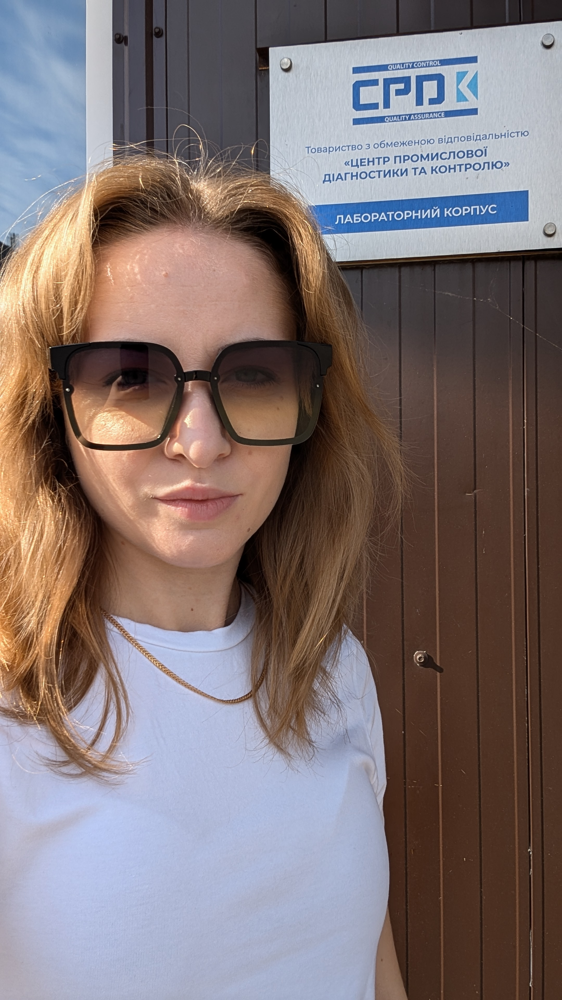

Заступник начальника лабораторії технічного контролю

Шановні колеги та клієнти!
Я, як керівник відділу руйнівних випробувань, рада поділитися нашим досвідом і досягненнями у сфері дослідження металевих матеріалів. Наша команда спеціалізується на проведенні руйнівних випробувань:
Механічні випробування - випробування на статичний розтяг та вигин, ударний вигин, вимірювання твердості;
Металографічні випробування - макро- та мікроаналіз зварних з’єднань, що включає приготування шліфів, аналіз дефектів зварних швів і основного матеріалу.
Ми також займаємося:
роботою з документами системи якості за стандартом ISO/IEC 17025:2017;
проведенням комплексів сертифікаційних випробувань за європейськими стандартами;
взаємодією із сертифікаційними органами.
Окремо хочу відзначити нашу роботу над розширенням сфери акредитації лабораторії. Ми активно впроваджуємо нові методи випробувань:
на стійкість до міжкристалітної корозії;
визначення неметалевих включень;
визначення величини зерна.
Наш досвід у проходженні аудитів НААУ та проведенні внутрішніх аудитів допомагає забезпечити високий рівень якості наших робіт. Крім того, ми успішно організовуємо та проводимо порівняльні міжлабораторні дослідження відповідно до вимог ISO/IEC 17025:2017.
В роздіді Галерея ви можете ознайомитись з результатами нашої роботи.
За додатковою інформацією та щодо співпраці прошу звертатися за номерами, що вказані у вкладці Контакти. Нехай наші спільні зусилля ведуть до нових звершень і розвитку!
З найкращими побажаннями,
Марина Шишка
Заступник начальника лабораторії технічного контролю,